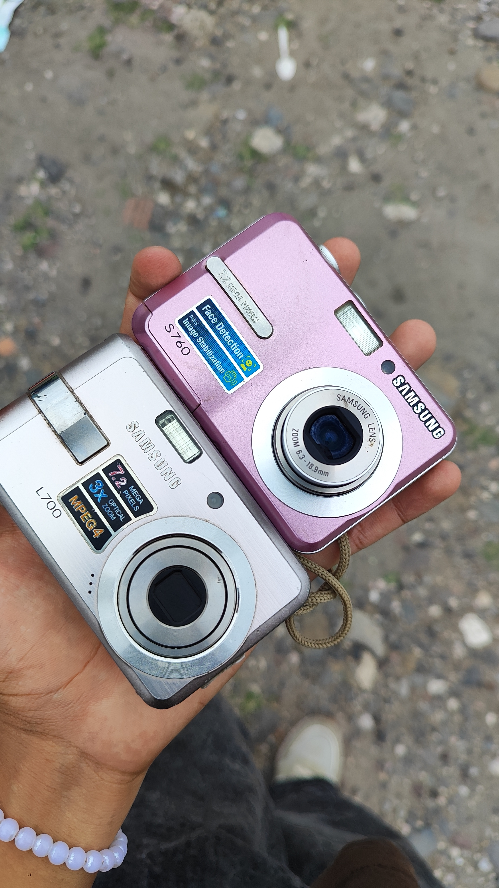
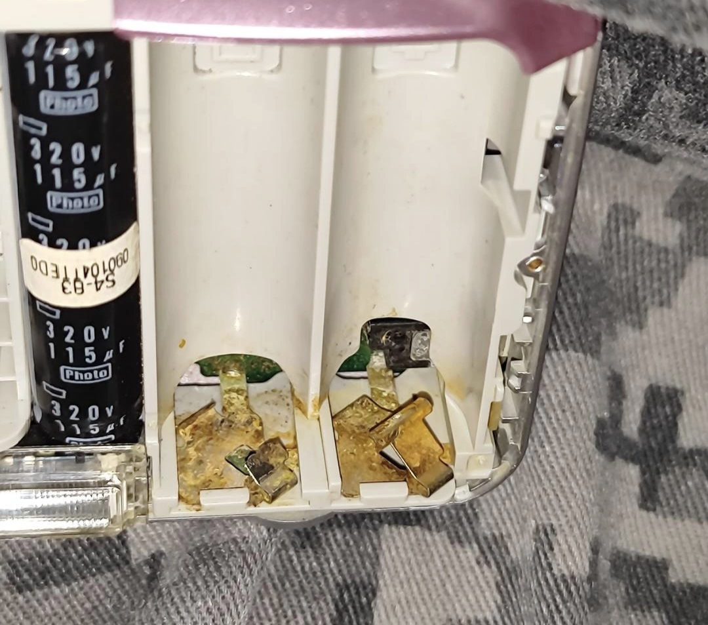
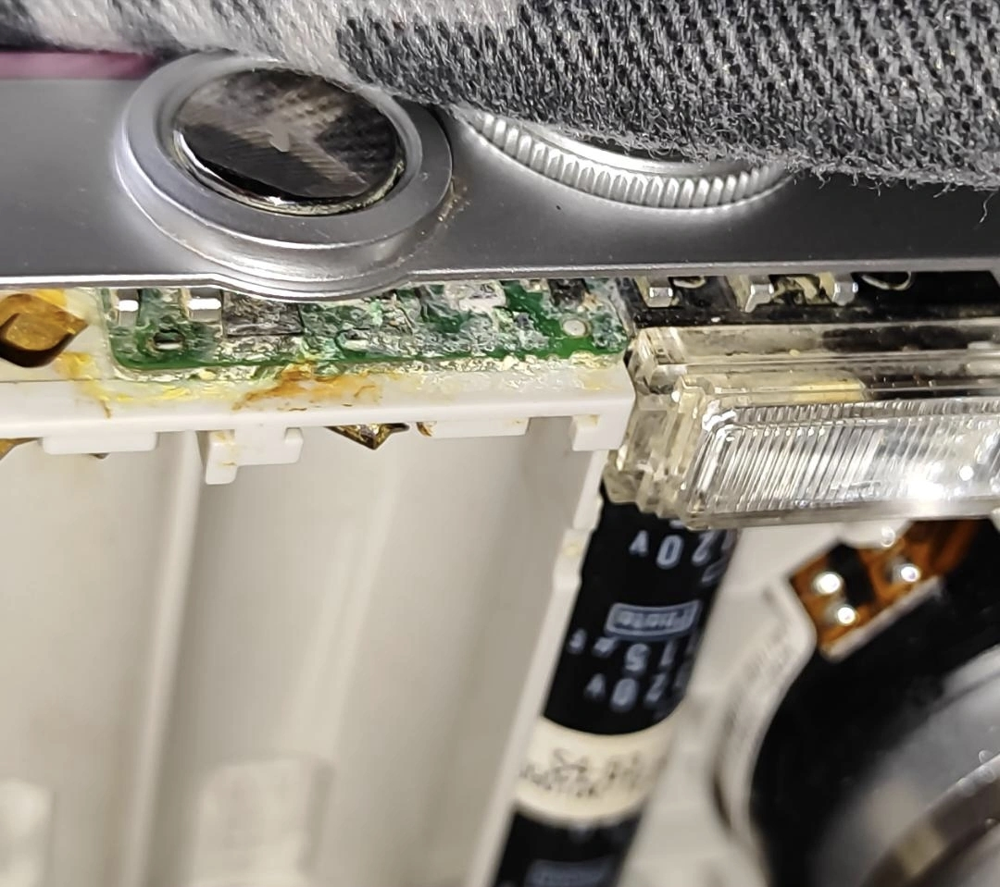
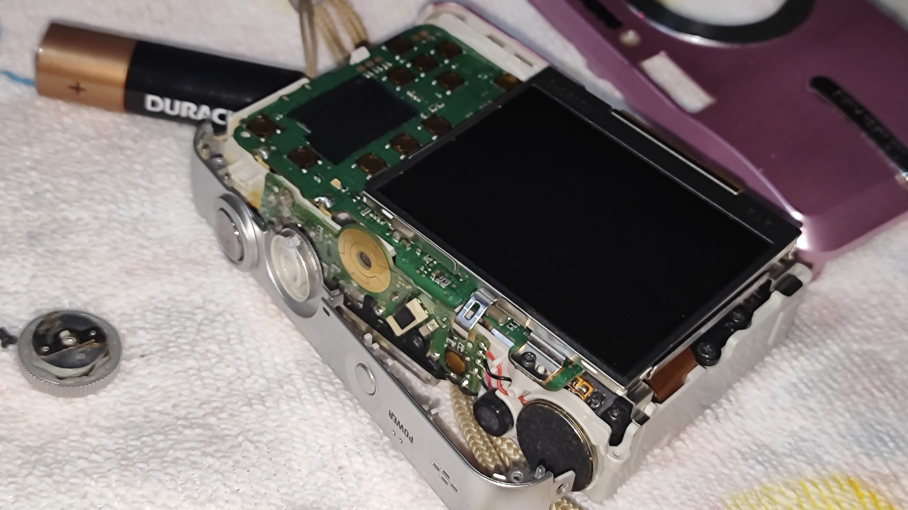
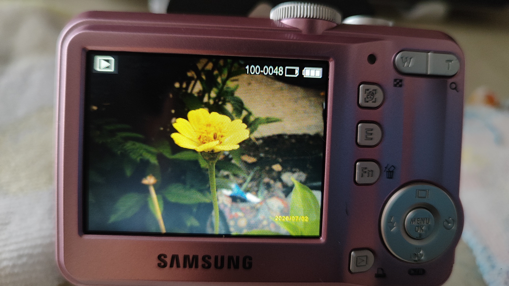
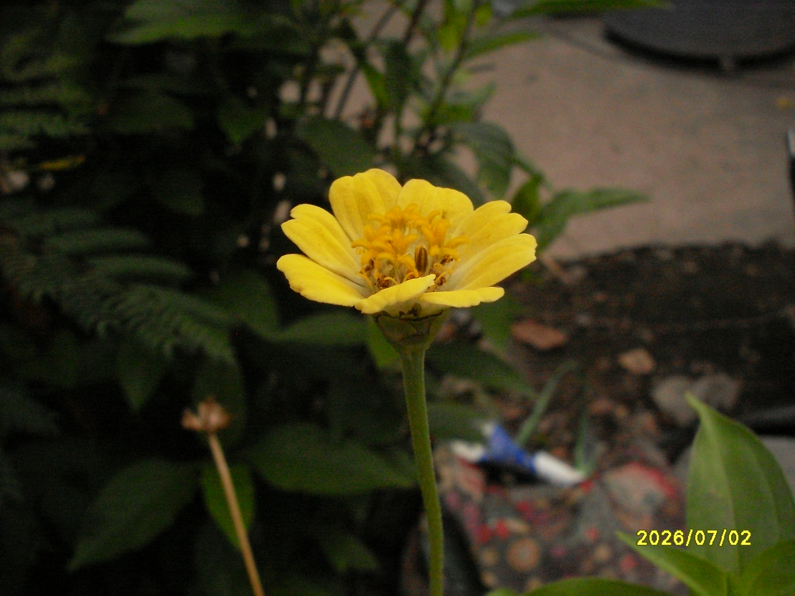
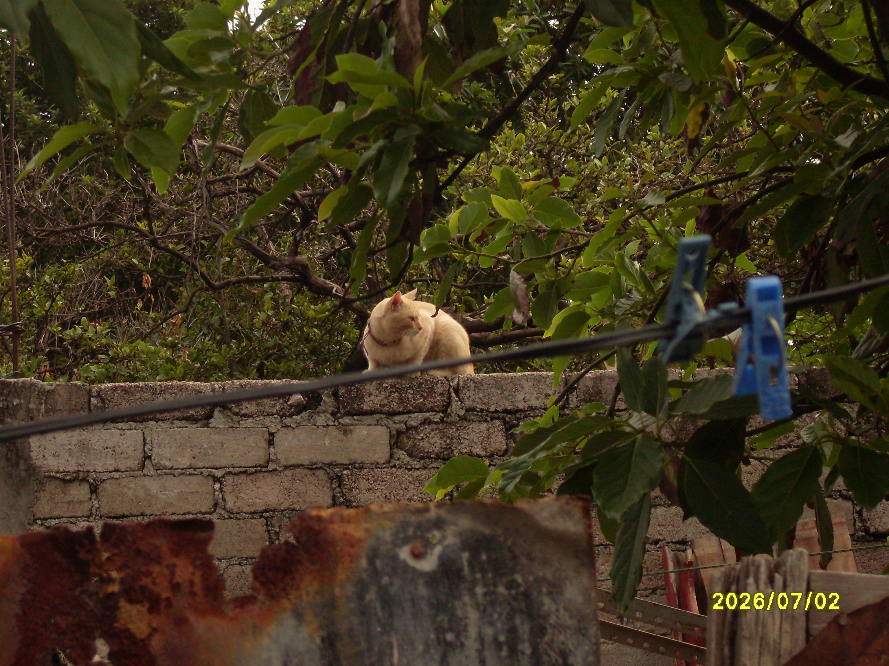

Restauración de cámara dígital
En este trabajo se hizo la compra de una cámara digital (Samsung-S760), la cual presentaba problemas de funcionamiento, se encontraba en un estado deplorable, por lo que se procedió a su reparación y restauración, logrando que la cámara funcionara correctamente y pudiera ser utilizada nuevamente.